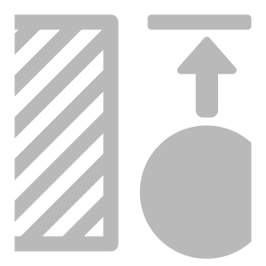
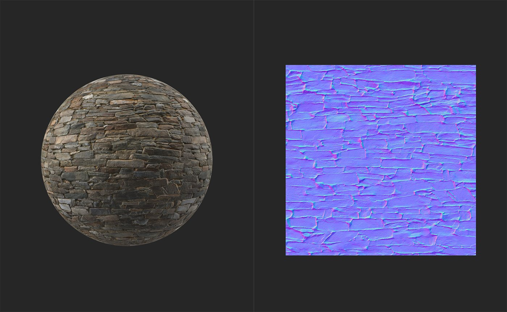
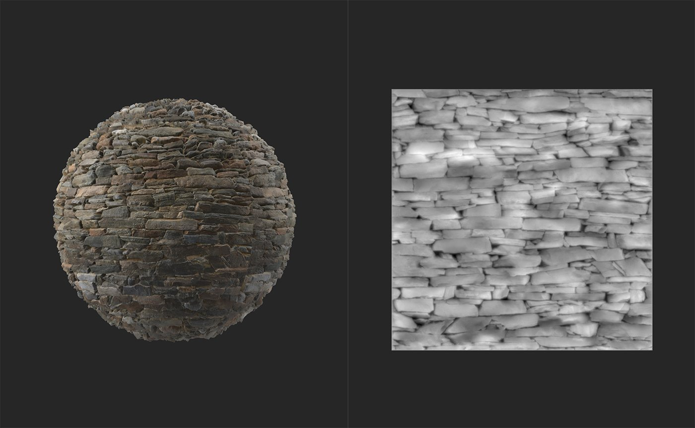

In: Tools
Generate height information based on the normal channel.
The images below show the Normal to Height filter in action. In the first image, the height map has no height information. In the second image, after the Normal to Height filter has been applied, a realistic height map is generated.


This filter has no parameters. To use it, simply add it to the top of your layer stack.